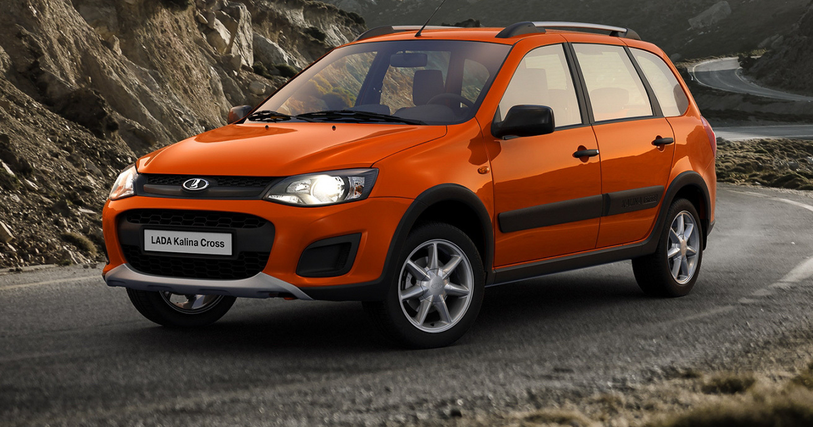

WebP — это формат файла, разработанный компанией Google в 2010 году. Его особенностью является продвинутый алгоритм сжатия, позволяющий сократить размер картинки без видимых (и не очень) потерь в качестве.
В среднем вес картинок сокращается на 25–35% против JPEG и 26% против PNG
В отличии от JPEG есть прозрачность
Конвертировать из PNG в WebP это боль и страдания. Нужен плагин в Фотошопе или танцы с бубнами.
Если JPEG мылит картинку по краям, у webP такой проблемы нет, края чёткие но падает качетсво рельефа и выглядит как пластик
WebP часто нечем открыть на компе, хотя я через пайнт открывал без проблем, но у мена windows 11. На линуксе вообще надо через хром открывать. В яблочном сафари этот формат только недавно стал поддерживаться
Если JPEG при сжатии делит изображение на одинаковые блоки то webP это делает по умному, то есть белый цвет будет большими блоками т.к. там цвет одинаковый
Internet Explorer не поддерживает WebP. Впрочем этого до сих пор не кто не заметил
Найти 3 разных картинки одинакого размера я не смог, а фотошопа у мена нет. Я нашёл редактор и конвертировал PNG в WebP и JPG без потери качества
